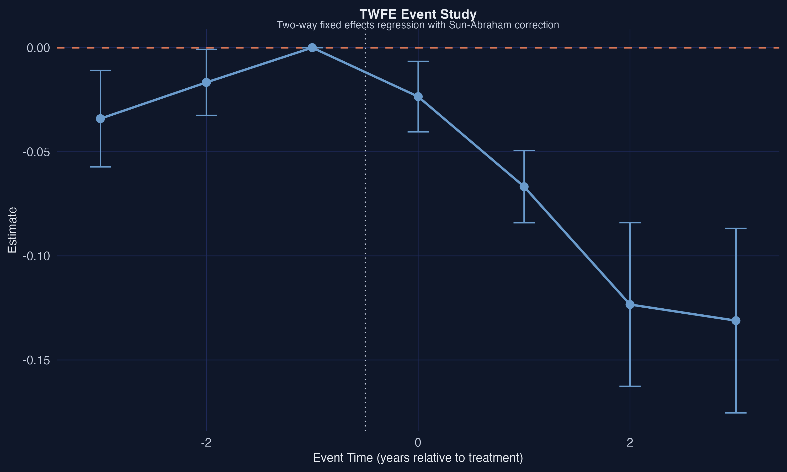
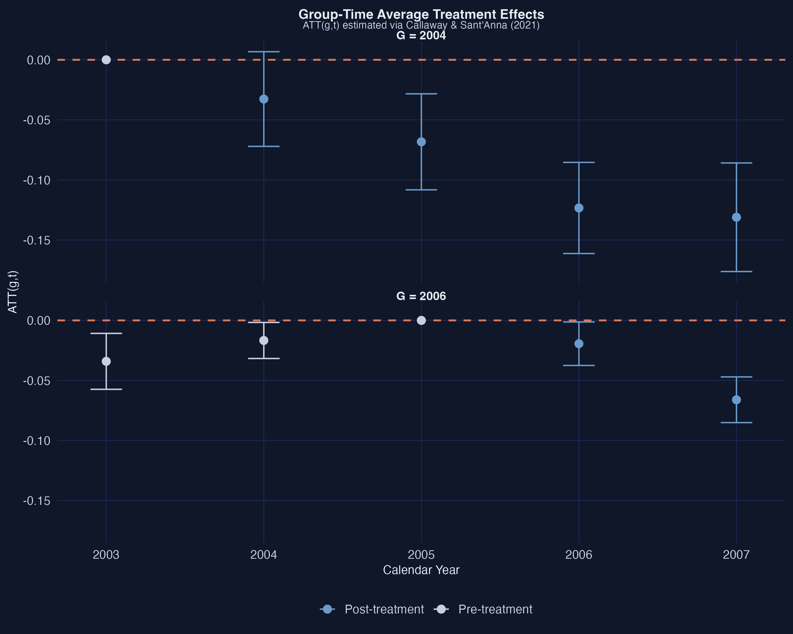
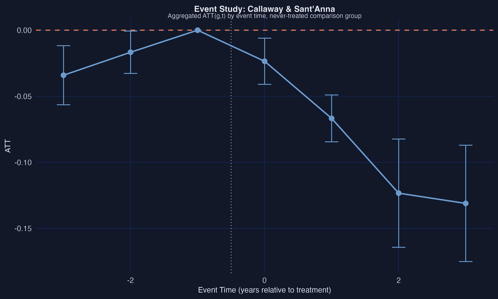
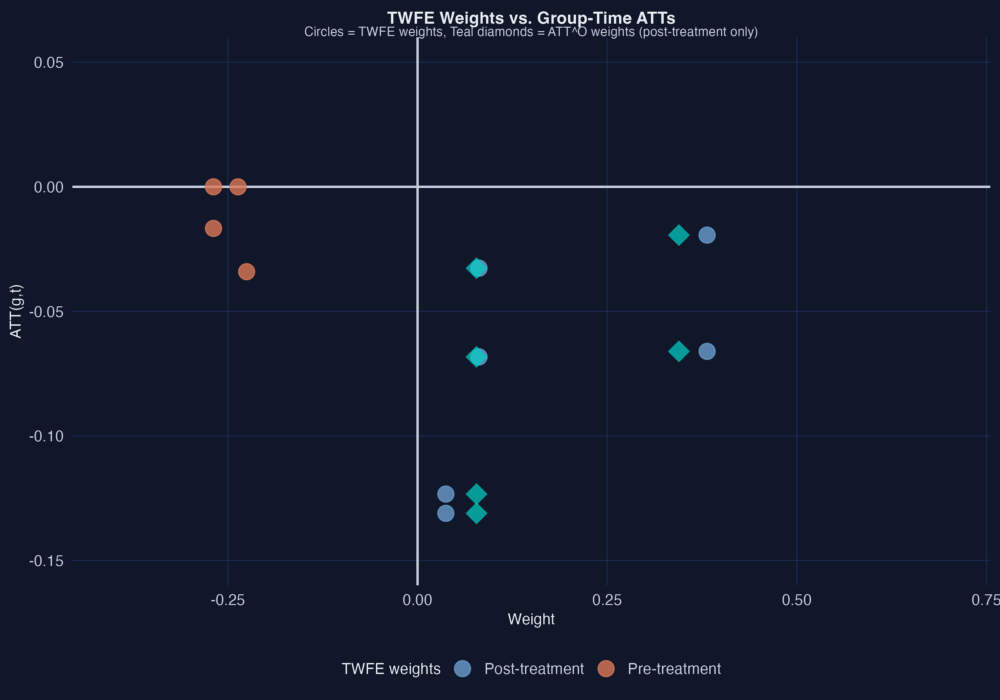
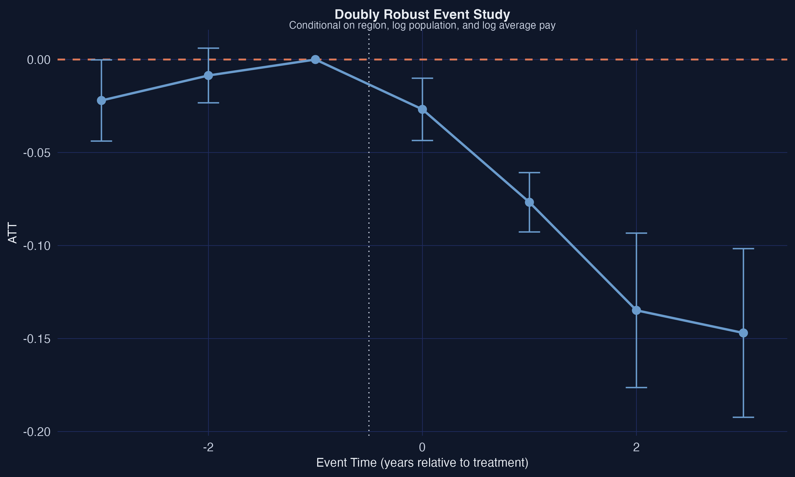
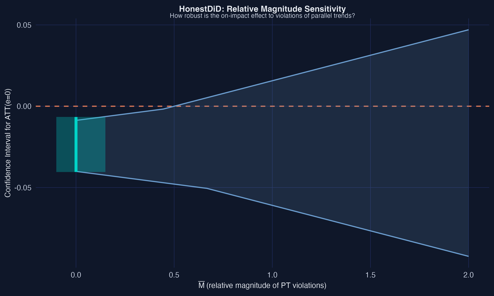
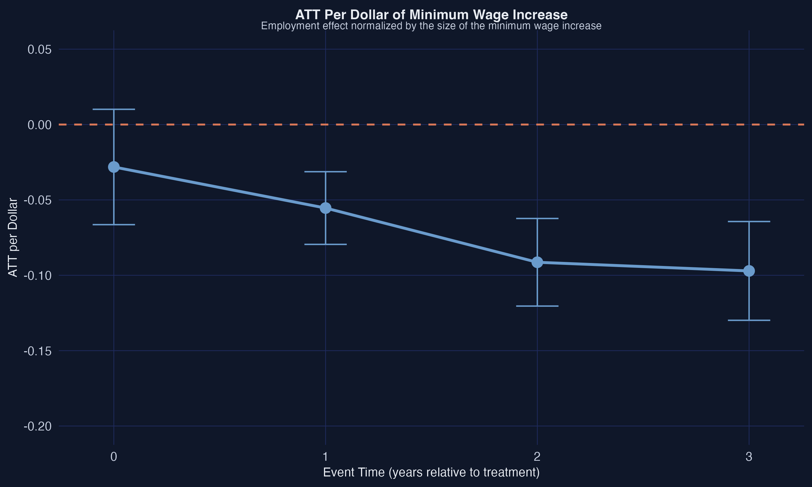

Does the minimum wage cut teen jobs? A modern DiD walkthrough in R
Nagoya University (GSID)
June 11, 2026
Act I
Did raising the minimum wage cost teens their jobs? Run the textbook two-way fixed-effects (TWFE) regression and you get \(-0.038\).
Run the modern estimator on the same counties and you get \(-0.057\) — half again as large. Which one is right?
From 2001–2007 the federal minimum wage sat frozen at $5.15/hour, while states raised their own floors at different times.
Counties fall into cohorts indexed by their first-increase year \(G \in \{0, 2004, 2006\}\): 102 treated in 2004, 226 in 2006, and 1,417 never-treated.
Staggered adoption: there is no single “before” and “after” for the country — each state has its own clock.

TWFE event study (Sun-Abraham interaction-weighted estimator). A pre-trend wobble at event time \(-3\); effects deepen after treatment.
Act II
\[\mathrm{ATT} = E[\Delta Y_{t^{\ast}} \mid D=1] - E[\Delta Y_{t^{\ast}} \mid D=0]\]
The treated group’s change in outcomes, minus the comparison group’s change. Valid only if both groups would have moved in parallel absent treatment.
The estimand is the ATT — the effect on the counties that actually raised their wage.
With staggered timing, TWFE mixes two kinds of comparison:
Like grading a student’s improvement against classmates who already took the test — the “control” already saw the answer key.
\[\mathrm{ATT}(g,t) = E[\,Y_t(g) - Y_t(0) \mid G = g\,]\]
The effect for cohort \(g\), measured in calendar period \(t\) — each cell compared only to clean (never- or not-yet-treated) controls.
Callaway–Sant’Anna (2021): separate identification from estimation. Build the grid of \(\mathrm{ATT}(g,t)\) first, average it later.
did replace the broken regressionattgt <- did::att_gt(yname = "lemp", # log teen employment
idname = "id", gname = "G", # unit id, first-treatment cohort
tname = "year",
control_group = "nevertreated",
base_period = "universal",
data = data2)
attO <- did::aggte(attgt, type = "group") # overall ATT
attes <- did::aggte(attgt, type = "dynamic") # event study
Group-time ATTs by cohort (Callaway–Sant’Anna). The G=2004 line falls further every year of exposure.
| Estimator | Overall ATT | SE | Sig. 5%? |
|---|---|---|---|
| TWFE | −0.038 | 0.008 | yes |
| Callaway–Sant’Anna | −0.057 | 0.008 | yes |
TWFE understated the negative effect by about a third — attenuated toward zero.

Event-study aggregation. Pre-trends hover near zero (with a wobble at \(e=-3\)); post-treatment effects grow monotonically.

TWFE weight scatter. Orange pre-treatment cells get nonzero TWFE weight (they should get zero); blue post-treatment weights differ from the proper teal \(\mathrm{ATT}^O\) weights.
| Method | Overall ATT | SE |
|---|---|---|
| Unconditional | −0.057 | 0.008 |
| Regression adj. | −0.064 | 0.008 |
| IPW | −0.065 | 0.008 |
| Doubly robust | −0.065 | 0.008 |
Three independent modeling routes agree — no model-dependence artifact.

Doubly robust event study (controlling for log population and log average pay). The \(e=-3\) pre-trend shrinks from \(-0.034\) to \(-0.022\) and is no longer significant.
−0.065
doubly robust ATT · identical under varying base period (−0.065), not-yet-treated controls (−0.065); anticipation pulls it to −0.040
Act III

HonestDiD sensitivity: the on-impact CI widens as allowed parallel-trends violations grow. It first touches zero near \(\bar M = 0.67\).

ATT per dollar of minimum-wage increase. The per-dollar effect deepens with cumulative exposure.
Objection. Fancy estimators and covariate adjustment can’t manufacture identification — maybe minimum-wage states were just on a different employment path.
Response. Correct, and we never claim otherwise. The ATT is identified only under (conditional) parallel trends. HonestDiD makes the dependence on that assumption explicit and quantifies exactly how much violation the conclusion can absorb.